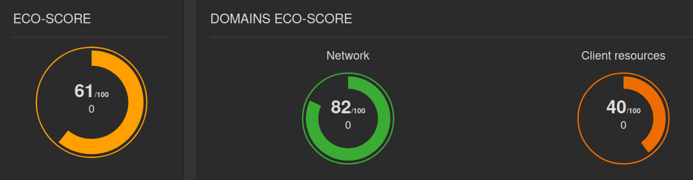
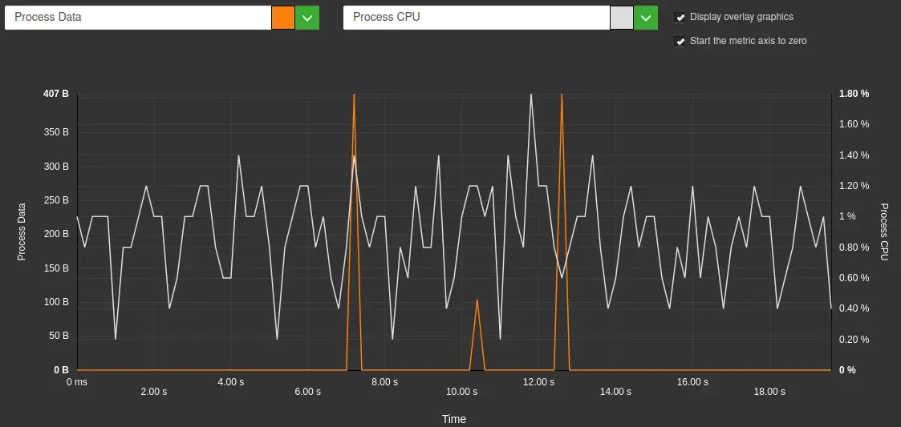
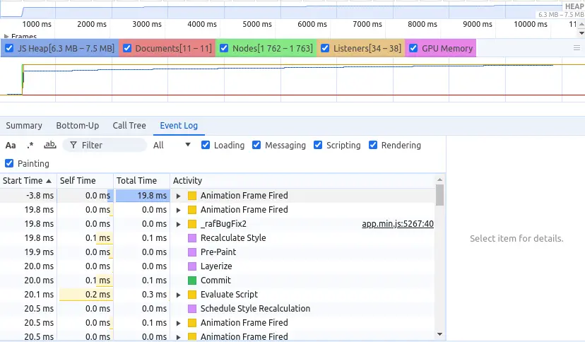
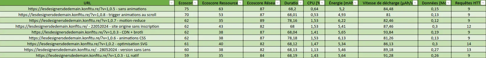
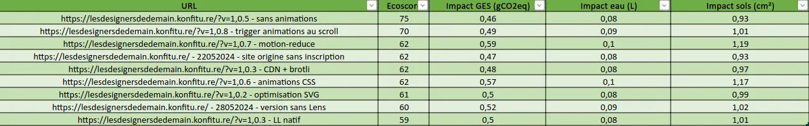

En mai 2024, sur le Slack des Designers Ethiques, Julien-Antoine Boyaval de l’agence web Konfiture partage un site réalisé pour Leroy Merlin. Le site en question (qui contient une seule page) est présenté comme écoconçu : https://lesdesignersdedemain.com/
À première vue (via les outils du navigateur web), le site apparaît en effet plutôt léger. Toutefois, certains éléments attirent mon attention. Nous y reviendrons.
Comme à mon habitude, je lance un benchmark avec Greenspector Studio afin d’aller plus loin.
Analyser les surconsommations d’un site
Les mesures ont été effectuées sur un téléphone Samsung Galaxy S9, en WIFI (3 itérations).
Après mesure, les résultats confirment les soupçons initiaux :
- EcoScore : 61/100 (Réseau : 82, Client : 40)
- Données transférées : 292 ko
- Décharge totale de la batterie : 5,28 mAh
- Process CPU (1,11 %)
Les données transférées sont effectivement faibles et, en conséquence, le score côté Réseau est très bon.

En revanche, le score côté Client est bas, ce qui est corrélé avec une décharge élevée de la batterie et un impact CPU élevé (surtout pour une page statique et aussi légère). Généralement, ceci peut être dû à des services tiers, des animations voire des calculs (principalement JS) effectués en boucle.
On commence par regarder ce qui se passe lorsque l’utilisateur est inactif, via Greenspector Studio :

On remarque 3 pics de données qui sont probablement liés directement à Chrome (qui collecte des métriques d’usage et vérifie régulièrement les fonctionnalités proposées par la version du navigateur).
Cette hypothèse fut par la suite étudiée via l’utilisation d’un proxy web (car les requêtes en question n’apparaissaient pas dans le navigateur). Ceci permit de confirmer que ces requêtes étaient bien liées à Chrome.
Sur un site plus lourd, ces requêtes peuvent passer inaperçues mais pas ici.
La méthodologie utilisée s’inspire de celle décrite ici : https://blog.greenspector.com/fr/auditer-requetes-application-mobile-android/
Mais il faut surtout s’interroger sur les fluctuations fortes du CPU. Il y a bien quelques animations sur le site mais la plupart ne sont déclenchées qu’au scroll. Elles ne devraient donc pas directement impacter le processeur lorsque l’utilisateur est inactif et les animations non-déclenchées.
Nous nous replions donc vers l’outil Performance des outils de développeur de Chrome : https://developer.chrome.com/docs/devtools/performance?hl=fr

En regardant ce qui se passe pendant 10 secondes d’inactivité, on constate que le processeur est très sollicité avec de très nombreux événements à traiter en continu. Rapidement, il apparaît de nombreux traitements JS (d’écoute ou d’observation) guettant certaines interactions de l’utilisateur pour déclencher les animations.
Tout ceci est géré par une librairie très utilisée : GSAP.
Arrivé là et avant d’aller plus loin, j’ai contacté Julien-Antoine directement afin de planifier un moment pour présenter mes constats à son équipe.
Après quelques échanges, il apparaît intéressant de travailler ensemble sur ce sujet. L’objectif est de voir comment réduire les impacts de la page via de l’analyse et des mesures. Pour cela, nous décidons de procéder de façon itérative : proposer une première liste de préconisations et les appliquer une par une pour pouvoir estimer l’impact de chacun par de la mesure.
Expérimentations autour du site
Dans un premier temps, il faut s’assurer que le badge affiché sur le site, provenant de Website Carbon Calculator n’est pas en cause (ce qui serait un comble). Pour cela, un tel badge est intégré sur une page HTML vide pour être mesuré via un benchmark.
L’EcoScore est de 95, les données transférées très faibles (un simple script JS de moins de 2 Ko qui récupère en une seule fois tout le nécessaire pour l’affichage) et l’impact sur le processeur négligeable (autour de 0,25% de sollicitation CPU).
Le badge est donc hors de cause.
En parallèle, l’équipe côté Konfiture déploie le site que nous voulons étudier sur un serveur à part qui accueillera les différentes versions réalisées. Une première mesure est effectuée pour constituer le point de référence pour la suite, certaines métriques pouvant varier en fonction des conditions d’hébergement du site.
La première version mesurée s’affranchit de la librairie Lenis qui gère en partie les animations.
La version 1.0.2 correspond à l’optimisation plus poussée des SVG (images vectorielles). Il en résulte une légère réduction des données transférées.
La version 1.0.3 ajoute le chargement progressif natif pour les SVG ainsi que la mise en place d’un CDN et de la compression (brotli) des fichers texte (dont SVG). Il en résulte une réduction notable des données transférées.
La version 1.0.5 supprime toutes les animations. Pour le client final, ceci n’est pas envisageable car les animations sont jugées essentielles afin de rendre le site plus attractif. Mais, une fois les autres éléments optimisés, cette mesure nous donne une cible à atteindre. Ici, on constate une réduction des données transférées (moins de JS nécessaire) mais surtout de la sollicitation CPU (qui reste l’une des métriques les plus affectées par les animations du fait des calculs nécessaires).
Pour aller plus loin sur ce sujet, je vous renvoie vers deux autres articles du présent blog :
La version 1.0.6 s’affranchit de tout code JS pour gérer les animations. Le souci qui apparaît alors est que les animations se font en continu. Même si, à l’usage, cette approche est moins impactante pour le processeur (ce qui est aisément vérifiable via l’outil Performance de Chrome), elle dégrade l’expérience utilisateur et pose problème pour l’accessibilité (critère 13.8 du Référentiel Général d’Amélioration de l’Accessibilité : https://accessibilite.numerique.gouv.fr/methode/criteres-et-tests/#13.8).
Après discussion sur le sujet, ce point apparaît rédhibitoire. Si la gestion des animations seulement en CSS est un bon compromis pour les impacts environnementaux, la dégradation de l’accessibilité doit être évitée.
Les premiers résultats ne correspondent pas exactement à ce qui est attendu. Il est apparu après analyse que le fait d’avoir des animations en continu venait entraver la détection d’inactivité lors des mesures et prolonger artificiellement la durée de scroll.
En conséquence, la version 1.0.7 propose déjà une première piste : s’appuyer sur le paramètre prefers-reduced-motion du navigateur pour, a minima, désactiver les animations pour les utilisateurs qui le souhaitent. A défaut de pouvoir désactiver la lecture automatique des animations, il faudrait (pour être conforme) réduire leur durée à moins de 5 secondes (voire 4 si on se conforme au critère 4.1 du RGESN : https://www.arcep.fr/mes-demarches-et-services/entreprises/fiches-pratiques/referentiel-general-ecoconception-services-numeriques.html#c36264 ) et/ou proposer un moyen de contrôle afin de les mettre en pause. Ce point reste en discussion.
Afin d’aller plus loin, la version 1.08 cherche à concilier écoconception et accessibilité. Pour cela, il a été décidé de limiter la durée des animations et, en conséquence, de ne les déclencher qu’au scroll afin de s’assurer qu’elles soient malgré tout visibles.
Résultats obtenus
Les résultats suivants sont obtenus via les mesures au fil de l’eau :


Au préalable, il convient ici de rappeler que l’impact sur le CPU, la mémoire mais aussi la décharge de batterie dépendent fortement du modèle d’appareil utilisé pour la mesure mais peuvent aussi varier entre deux appareils du même modèle. C’est pour cela que chaque mesure comprend également une étape de référence non-affichée ici. Pour des pages web, cette étape de référence consiste à mesurer ce qui se passe lorsque l’utilisateur est inactif sur un onglet de Chrome affichant une page entièrement noire (impact énergétique minimal, notamment par rapport à l’onglet vide de Chrome qui est très clair donc plus impactant si on utilise un appareil avec un écran OLED).

Les mesures sur des sites aussi légers sont souvent plus compliquées car les écarts et surconsommations peuvent être légers voire difficiles à distinguer d’artefacts de mesure, par exemple. Parfois, il est possible de contourner cela en adaptant la méthodologie. Par exemple, pour mesurer un composant très léger, on l’intègre 100 ou 1000 fois sur la page et on procède de même avec d’autres composants que l’on voudrait comparer.
L’augmentation de la durée de scroll suite à l’application en continu des animations a provoqué un allongement conséquent de la durée de scroll (17 secondes au lieu de 6), ce qui augmente directement l’impact énergétique et les impacts environnementaux.
Pour des sites aussi légers, les requêtes “parasite” de Chrome (télémétrie, vérification des variantes) apparaissent d’autant plus impactantes, même si seulement quelques Ko ou dizaines de Ko de données sont transférés.
Dans le cas qui nous intéresse ici, la meilleure solution pour pouvoir limiter les impacts de l’intégration des animations correspond à la version 1.0.8. Cette dernière bénéficie de l’implémentation des bonnes pratiques suivantes :
- Optimisation poussée des SVG (notamment via la compression et le lazy-loading)
- Limiter la durée des animations, les stopper pour les utilisateurs en faisant le choix et ne les déclencher qu’au scroll.
Au global, sur le nombre de requêtes et les volumes de données transférées, les gains sont indéniables (même si le site était à la base très léger).
Concernant la vitesse de décharge de batterie, les gains ne sont pas négligeables. Même si les impacts environnementaux et la consommation d’énergie apparaissent au global identiques voire légèrement plus élevée (à cause de l’augmentation de la durée de scroll), les résultats sont encourageants.
Conclusion
Comme déjà souligné dans l’article sur les sites sobres, l’estimation de la sobriété d’un site est complexe car elle prend en compte de nombreux facteurs mais aussi une méthodologie particulière. Même sur un site annoncé comme sobre, il reste souvent des améliorations à mettre en place (même si toutes ne valent pas forcément le coup).
Une fois n’est pas coutume, le sujet des animations revient. Parfois utilisées pour compenser la réduction du nombre d’images, elles sont très souvent impactantes, même si les outils gratuits occultent cet impact (en se concentrant sur les transferts de données effectués lors du chargement de la page). Lorsque, comme ici, on veut aller plus loin pour les intégrer de façon aussi efficiente que possible, les résultats ne sont à ce jour pas forcément concluants. La priorité devrait être la frugalité (s’affranchir des animations) puis la sobriété (en réduire le nombre) et enfin l’efficience (optimiser leur intégration). Toutefois, notamment pour des raisons d’accessibilité, leur utilisation devrait être proscrite (mais aussi en s’appuyant sur le critère 4.1 du RGESN).
Pour ce qui est de l’intégration efficiente des animations, tout reste à faire. Ce chantier est très complexe à aborder car les métriques à prendre en compte sont nombreuses et complexes à mesurer et comparer (CPU, GPU, décharge de batterie, etc). Ajoutez à cela les risques de transfert d’impact (opter pour du CSS plutôt que du JS ou inversement) et vous aboutissez à un sujet technique pour le moins épineux. Toutefois, on note ici que la limitation de leur durée, couplée à des logiques simples pour leur déclenchement, apporte les meilleurs résultats.
Aujourd’hui, les référentiels et connaissances permettent d’énoncer comment rendre conforme une animation du point de vue de l’accessibilité. Pour l’écoconception, ce n’est pas encore le cas (même si le RGESN propose des pistes). Il n’y a pas (à ma connaissance) de solution universelle pour proposer des animations qui n’entraînent pas de surconsommation.
D’un point de vue très pragmatique, il convient donc de revenir à une approche simple mais importante : évitez autant que possible l’intégration d’animations, aussi bien pour des raisons d’accessibilité que d’écoconception (et plus généralement d’expérience utilisateur).